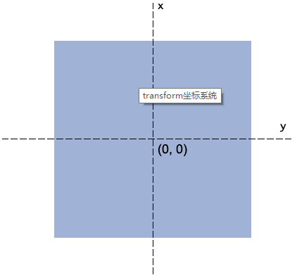

文字和小图标实例
方法一
- 适合场景 图标的位置在文字附近
- 缺点 icon的位置不能自由控制
1 | * { |
1 | <div class="con"> |
方法二
- 适合场景 不做动态 后期不会做修改的
- 缺点 不方便修改和做效果
1 | h3 { |
1 | <div class="con"> |
方法三
- 适合场景 要求位置自由比较高的
- 缺点 要计算位置和父元素相对定位
1 | h3 { |
1 | <div class="con"> |
1 | * { |
1 | <div class="con"> |
1 | h3 { |
1 | <div class="con"> |
1 | h3 { |
1 | <div class="con"> |
1 | /*iphoen5*/ |
1 | .search-form { |
1 | @charset "UTF-8"; |
transition-property 过渡的属性名transition-delay 过渡的时间transition-timing-function 过渡的速度函数transition-delay 过渡延迟transition 需要知道中间状态的变化 如0px到100px 不能0px到auto，display的block到nonetransition 需要事件触发，不能网页加载自动发生animation-name 绑定动画名字animation-duration 动画持续时间animation-timing-function 动画速度函数animation-delay 动画延迟animation-iteration-count 次数 infiniteanimation-fill-mode 动画结束状态animation-direction 动画方向animation-play-state 动画暂停和运动 paused running1 | @keyframes item{ |
定义让元素2d或3d转换
场景元素过渡动画、过渡动画、元素位移、旋转等等

rotate(angle)transform-origin1 | // 根据设备的宽度设置htm的font-size |
1 | @charset "UTF-8"; |
1 | /*背景*/ |
1 | /*列表容器*/ |
1 | <div class="container"> |
1 | <div class="container"> |
justify 表示一行的内联元素两端对齐1 | .wrap { |